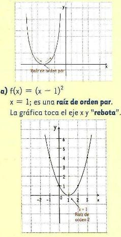
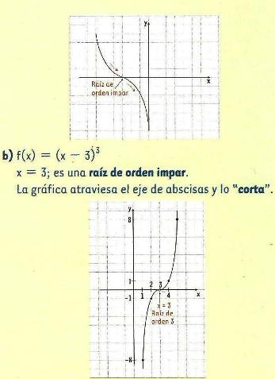
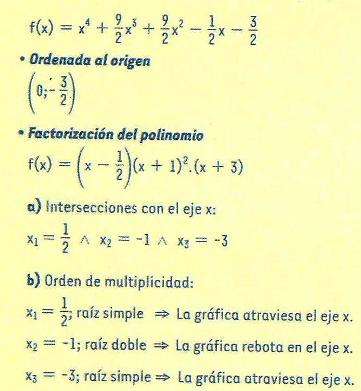
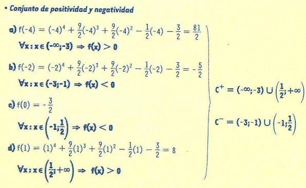
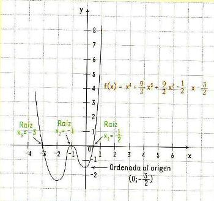
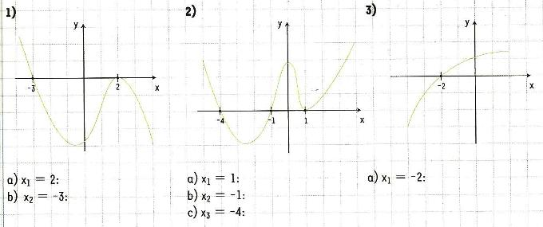

¿Cómo realizar un gráfico aproximado?
Para realizar el gráfico aproximado de una función polinómica:
1) Hallá la ordenada al origen, que es buscar el valor de la función cuando la x = 0. Es decir, reemplazá a la x por 0 [F(0)]. Así, determinas el punto donde la gráfica corta al eje y.
2) Hallá las raíces, indican las intersecciones de la gráfica con el eje x. Para esto, es necesario que iguales a cero a la función [f(x)=0]. Queda determinada una ecuación, que para resolverla se debe recurrir a la factorización de polinomios.(Ver iDevives anterior)
Recordá:
Las raíces son las soluciones de la ecuación asociada a esas funciones y el orden de multiplicidad de una raíz es la cantidad de veces que se repite. Además, el grado de la función indica el número de raíces que tiene la misma.
Para determinar el comportamiento de una función polinómica respecto del eje x (eje de las abscisas), factorizá el polinomio, f(x) = a (x-x1) (x-x2) (x-x3)... (x-xn), (siendo a el coeficiente principal; y x1, x2, x3, xn raíces o ceros de la función) y determiná el orden de multiplicidad de sus raíces.
Si el orden de multiplicidad de la raíz es par, la gráfica de la función toca al eje x (rebota) pero no lo atraviesa.

Si el orden de multiplicidad de la raíz es impar, la gráfica de la función atraviesa el eje x.

3) Hallá los conjuntos de positividad y negatividad, para lo cual buscá los valores del dominio (de la variable x) cercanos a las raíces para determinar si la función es positiva o negativa en ese intervalo. Para obtener los mencionados conjuntos es conveniente basarte en la forma factorizada.
También, es posible calcular el punto medio entre dos raíces consecutiva, para determinar el valor que adquiere la función en dicho punto. El punto medio se obtiene con la semisuma de los valores de las raíces consecutivas; en fórmula:
punto medio = x1 + x2 / 2
El conjunto de positividad (C+) está formado por todos los valores del dominio para los cuales la función es positiva.
El conjunto de negatividad (C-) está formado por todos los valores del dominio para los cuales la función es negativa.

1) Determiná , según el gráfico , si las raíces son de orden par o impar.

¿Te animás a indicar el grado de las dos primeras funciones?